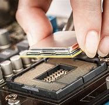

Multimídia
Na Pontaço Tech, oferecemos soluções multimídia de última geração para gamers e profissionais exigentes. Trabalhamos com computadores otimizados para alto desempenho em jogos, criação de conteúdo e consumo de mídia em alta definição. Seja para assistir seus filmes favoritos, editar vídeos ou mergulhar em experiências imersivas, temos o equipamento ideal para você.
Nossos computadores são configurados com placas de vídeo potentes, processadores de última geração e sistemas de som integrados que garantem qualidade superior em todas as atividades. Além disso, fornecemos suporte completo para que seu setup esteja sempre pronto para te acompanhar em qualquer desafio multimídia.
Com a Pontaço Tech, você transforma sua experiência digital. Compre com quem entende de tecnologia e entrega qualidade em cada detalhe.
Quem Somos

A Pontaço Tech é uma empresa especializada em computadores de alto desempenho, com foco em soluções voltadas para gamers, profissionais e entusiastas da tecnologia. Desde nossa fundação, buscamos oferecer produtos de qualidade, com ótimo custo-benefício e atendimento personalizado.
Trabalhamos com as melhores marcas e oferecemos configurações sob medida para cada cliente. Nossa missão é conectar você à potência e à inovação, entregando máquinas prontas para qualquer tarefa: desde jogos pesados até aplicações profissionais.
Nos destacamos pelo compromisso com a tecnologia e pela confiança dos nossos clientes. Pontaço Tech é mais do que uma loja — é sua parceira no universo digital.
Soluções Digitais
Além da venda de computadores, a Pontaço Tech oferece uma linha completa de soluções digitais para quem busca desempenho e inovação. Montamos máquinas personalizadas, prestamos suporte técnico especializado e indicamos os melhores upgrades para seu setup evoluir com você.
Seja para montar um PC gamer, um computador para home office, design gráfico ou edição de vídeo, temos a solução ideal. Trabalhamos com montagem profissional, garantia e consultoria para que você faça a melhor escolha. Nossa equipe está pronta para entender suas necessidades e entregar resultados acima da expectativa.
Entre em contato com a Pontaço Tech e descubra como a tecnologia certa pode transformar sua rotina.
